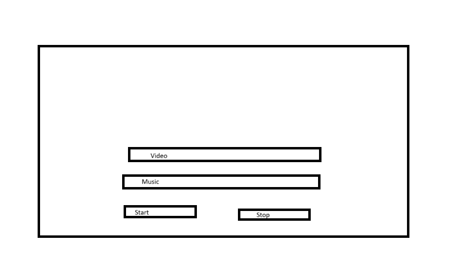
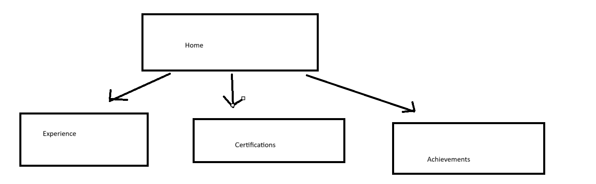

ADVANCING COMPUTER SCIENCE DEGREE OBJECTIVES
Touring video
1. Follow a software development process to analyze a problem, and to design, build and test software solutions.

Github - https://github.com/a9ent789/SIP-test
The SIP prototype was made through many different semesters using multiple design processes. One of which is the SIP brief which begins the creation of the product by creating a document that explains what is necessary for completion. Along with that it has the design for the prototype and button mapping for app directions.

Github - https://github.com/a9ent789/AIwebsite
This website is designated to learn the process of using AI to create something. It was difficult at first, because the AI couldn't understand what I wanted or wouldn't make something that worked. The problem was how can I use AI to develop something, and this shows me solving that problem and creating something with it.

Github - https://github.com/a9ent789/resume-web
This one is different because this is something I have been working on in my own time. I thought it would be cool to have a website that holds my resume instead of just having a paper resume. I wanted an easier way to send my resume to future employers and took a lot of time actually creating something. Even though it isn't finished it is something I plan to continuously work on for a long time to come.
2. Demonstrate software development skills using more than one programming language and development environment.
Github - https://github.com/a9ent789/reactnative
This program is 2 of the three that uses software development in a language that I don't really know that well. This is programmed in react native and it is built for phone apps. We used another program to be able to test the app on our phone. It was just a react testing application. Since I mainly program in C++ this was far out of my scope.

Github - https://github.com/a9ent789/AI-chatbot
This is an AI chatbot that I created that uses python. Being different than react native, and also not my main language of c++ this counts well in showing that I used was able to use more than one programming language. I enjoyed learning about AI while making this, although there were some struggles figuring out exactly how to break through all of the kinks.
Mega Link - https://mega.nz/file/1rEwGKpQ#MsqT7T4t7lSVnChK6ySdVVEqLOrtK_uC8qpOhhX5Fg4
This is a game I made for the intro to game development class. And you might thing that there wasn't much programming, there was. Unfortunately it isn't anything I can put onto GitHub since the files are too large for me to upload with my internet. Although the programming used was block programming, probably one of the most used types of programming when it comes to front facing development.
3. Implement data driven solutions
Github - https://github.com/a9ent789/AI-chatbot
I used this previously for demonstrating python programming. But this works great to show that data is generated. Considering that it is an AI that creates its own stories and takes in and deciphers information from the user, makes it perfect for implimenting data driven solutions. The text generated is something that I can't even predict, it generates the stories and information based on the AI model and the text that I provide.
Github - https://github.com/a9ent789/SIP-test
This is where I started working on things to prepare for the SIP project. This program can detect what is in the picture of a picture I imput. It generates a response based on what the AI model believes that is in the picture. I can't upload the entire project, but I can upload the code. It takes the information to generate a response perfect for a data driven solution.
Github - https://github.com/a9ent789/Sorting
This program is one of the programs I made for the class that tought me about data structures. It shows different types of sorting, and how data put in and taken out can effect the sorting process. It generates an ordered list based on the data provided in the numbers. While for a simple program it explains well on how to sort through data effectively if you have to have a search algorithm in your future programs.
4. Design and implement software solutions for mobile devices or embedded systems or multiple platforms
Github - https://github.com/a9ent789/reactnative
As created specifically for mobile devices, this works perfectly for this objective. This is a application programmed in react native, to which is just a joke application. It can be tested on the phone, but you have to download a program testing software. I created this for my react native class, but I still find it kind of funny.
Github - https://github.com/a9ent789/resume-web
I'm still working on this one as it will grow with my resume, but the goal is for it to be able to be seen properly and effectively on both computer browser and mobile browser. This will give it a seemless look for hiring managers that use their phone to research people. But will also be able to look well for those that prefer to use the computer.
Github - https://github.com/a9ent789/GAA
All the programming done in this is actually embedded in another program, The code is backend for this program but not shown for the game developers. It also Allows the creation for this game to go onto a mobile device as well. So it fulfills this objective due to the program that was used to create it.
5. Document the planning and development of software applications using industry-standard tools, techniques and processes
Github - https://github.com/a9ent789/GAA
This project was created using the latest industry-standard tools. The most notable was the adobe creative cloud. Within the Creative Cloud it uses Photoshop, Illistrator and Animator. Their are other industry alternatives to this but realistically these are the most common and desired tools for the art field.
Mega Link - https://mega.nz/file/1rEwGKpQ#MsqT7T4t7lSVnChK6ySdVVEqLOrtK_uC8qpOhhX5Fg4
This project is no different in using the latest and greatest industry standard. Unreal Engine is what was used to create every aspect of this game. There isn't a single game developer that wouldn't have heard of Unreal Engine. They have also been breaking the mold for delevoping more fine tuned games along with being on the forefront of research for more advanced visuals.
Github - https://github.com/a9ent789/AIwebsite
This website like many others was created using my favorite programming software and ChatGPT. That programming software is Visual Studio Code. ChatGPT is becomming more common in professional life, but Visual Studio Code has been there. Being more seemless to it's original counter-part, Visual Studio, it adds many QOL features for the programmer. Programming with any language using this software is not only an industry standard, it is also a personal preference.
6. Within software solutions describe, implement and analyze data structure techniques such as lists, trees, hash tables, graphs, along with sorting and searching algorithms.
Github - https://github.com/a9ent789/Sorting
This program made in c++ demonstrates different sorting algoritms that sort throughout a tree. It works as intended and sorts the numbers along with removing and adding information. So no matter what numbers you add you can see all the numbers sorted in order.
Github - https://github.com/a9ent789/CSC382-Hashing
This program takes in a text and hashes it so that the original text doesn't remain. It uses a hashing table to achieve this. This is a common thing to be done for plenty of security reasons. It takes text and numbers and shakes it up with some salt. This will not be the first or last hashing algorithm that I will see.
Github - https://github.com/a9ent789/BST
This program is a binary search tree function. It generates random numbers in the beginning just to have numbers, then it searches through the tree to find the number you were looking for. Since it is a binary search tree, it works perfectly for this obhjective. It is simple but is something that is used widely throughout the industry.